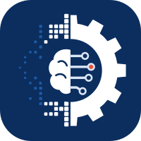

Robotique
Bras industriels et robots collaboratifs, commande, perception et programmation (ROS 2).
Une formation de deux ans au croisement de l'intelligence artificielle, des systèmes embarqués, de la robotique et de l'Industrie 4.0.
Concevoir, simuler et piloter l'usine intelligente : du capteur au cloud, du robot à son double virtuel.
Bras industriels et robots collaboratifs, commande, perception et programmation (ROS 2).
Formation immersive, maintenance assistée et visualisation 3D des lignes de production.
Modéliser et simuler les équipements en temps réel pour prévoir, optimiser et piloter à distance.
Déployer la vision et l'apprentissage profond au plus près des machines, sur cartes embarquées.
Offre de formation
Former des cadres capables de concevoir, programmer et déployer des systèmes industriels intelligents : acquisition de données, commande, IA embarquée, vision, IoT et jumeaux numériques.
Programmation avancée et embarquée, modélisation et simulation, data science, apprentissage profond, robotique, cybersécurité, cloud et DevOps, conception de systèmes (Design Thinking, UML/SysML).
Trois semestres de modules (techniques, langue et soft skills), puis un semestre consacré au projet de fin d'études. Deux formules : formation initiale (TN) et formation à temps aménagé (TAM).
Msc S2I : Systèmes Industriels Intelligents — répartition des modules par semestre.
Chaque espace est protégé par un identifiant et un mot de passe.

Pr. Aissam Berrahou
Département Ingénierie des Systèmes Embarqués
aissamberrahou.github.io
École Nationale Supérieure d'Informatique et d'Analyse des Systèmes (ENSIAS)
Université Mohammed V de Rabat
ensias.um5.ac.ma
Offre de formation du Master S2I.